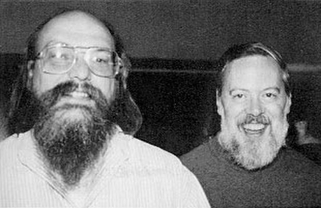

| Prénom |
Nom |
Photo |
Description |
| Dennis |
Ritchie |
 |
Dennis MacAlistair Ritchie est un des pionniers de l'informatique moderne, inventeur du langage C et codéveloppeur de Unix. |
| Linus |
Torvalds |
|
Linus Benedict Torvalds est un informaticien américano-finlandais connu notamment pour avoir créé le noyau Linux en 1991 (à 21 ans). |
| Blaise |
Pascal |
 |
Blaise Pascal est un polymathe : mathématicien, physicien, inventeur, philosophe, moraliste et théologien français. |
| Alan |
Turing |
 |
Alan Mathison Turing est un mathématicien et cryptologue britannique, auteur de travaux qui fondent scientifiquement l'informatique. Il est aussi un des pionniers de l'Intelligence artificielle. |
²